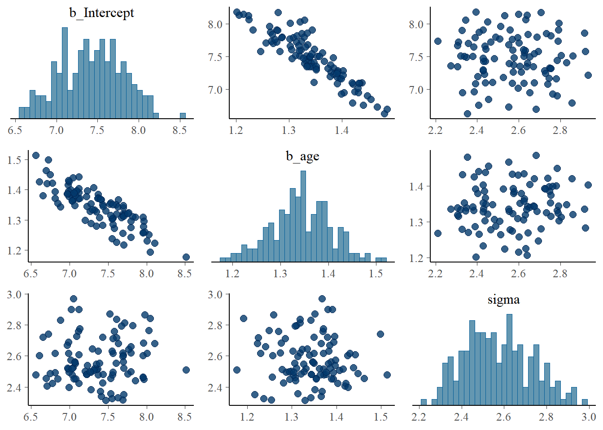
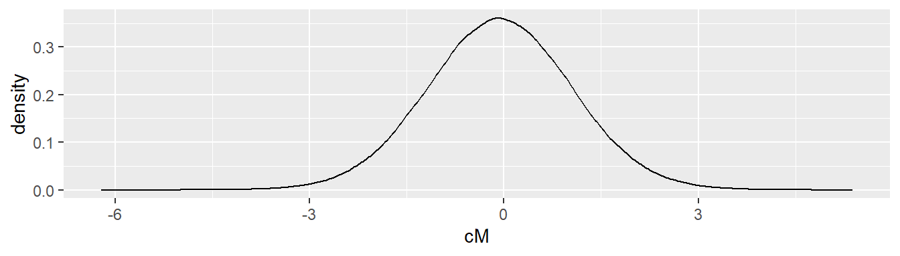
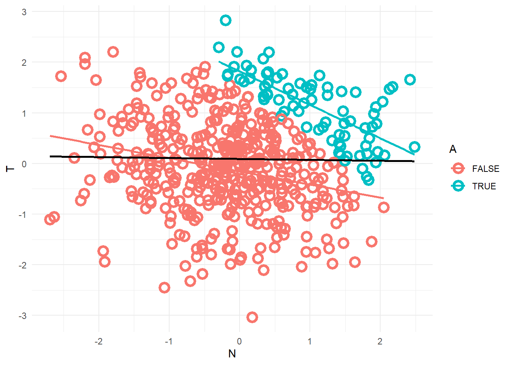

Though I’ve covered much of this material previously in Krushke’s book, I need to reinforce and harden my knowledge base if I am to help in the fight against the frequentist hegemony. I’m reading this book, which is intentionally structured sequentially as a course, on Alex’s recommendation. This file contains notes on the material, structured analogously to the book, which unfolds over 17 chapters!
Sections
Each section begins with …, contains …, and ends with … .
Setup
Install stan, rstan, cmdstanr kind of a pain. CRAN version of rstan is incompatible with the latest version of R, god knows why. RTools is needed to build source packages. Visit stan homepage for instructions.
Install rethinking also weirdly a pain. The rethinking dependencies are a tad sloppily defined, so there are a couple classic “You need new processx, can’t install processx” loops
How is the degree of uncertainty mathematically represented in the Beta distribution?
This unit begins with Mcelreath’s perspective on the correct direction of the relationship between research and stats. In his model – fully reflected in the course – research precedes data and data analysis. Statistical models are ‘Golems’, powerful but stupid automata. Animated by sensible and carefully specified goals, they contribute to the progress toward truth. Given careless or vague instructions, however, they are liable to do meaningful damage, much like the chapter one’s titular ‘Golem of Prague’.
He then demonstrates the fundamentals of the Bayesian approach by working through the problem of estimating the proportion of the earth’s surface covered in water using a randomly generated sample of points. This example clearly distinguishes Rethinking from the other stats courses I’ve taken, which have all begun with frequentist staples like drawing a coloured ball from a bag, or flipping a coin whose fairness is in question. While the globe example is trivial (we already know the answer) its form is much more portable to other more meaningful research questions.
Lecture 01: Research Before Data
we’re not interested in fussing with statistical models for their own sake
we want to use them to answer scientific questions about the world we inhabit
the course follows that intention, connecting each method to applied research
these videos make revisions to the content of the course, which will ultimately be reflected in a third editions of the book
we’re not going to talk about the conflict between Bayesian and Frequentist stats
Instead, we’re going to focus on providing the best strategies for causal inference
On Causal Inference
prediction of the causes of an intervention
cannot be analyzed without a causal model
causal imputation means that you’re constructing unobserved counterfactual observations given a causal model
intimately related to description and design
even when the goal is descriptive, you need a causal model
the sample is caused by things. it differs from the population, and if your goal is to describe it, you need to model the causes of those differences.
DAGs
DAG stands for Directed Acyclic Graph
They are used to represent heuristic causal models
analyzing our causal DAGs helps to identify necessary statistical models
Get the researcher’s head out of data and into science
DAGs can be correct or incorrect
Golems
using the classic stats flowchart for picking a test is very limiting, and creates incorrect and dangerous ideas about what they can do
Gosset (Student, of T test) invented the test to do quality control on Guinness
null models are rarely unique, and therefore rarely useful or sensible
clearly inadequate in identifying the mechanisms of evolution
for most scientific problems, we want to consider multiple alternative causal models
we need golems to do more, make generative causal models, stats models justified by generative models and questions, an effective way to produce estimates
must be careful with controls
Bayes is practical, not philosophical. It allows scientists to account for measurement error, missing data, latent factors, etc.
Owls
circles to owl unclear, as metaphor for general statistical pedagogy
this course goes more slowly, but it’s more successful
we’re going to have a specific general workflow
scientific data analysis requires software engineering, but the current state of it is largely amateur
theory, model, evidence loop
Chapter 01: The Golem of Prague
This chapter gives us a fairly traditional introduction to the concept of the statistical model. It emphasizes the insufficiency of any statistical approach and the need for careful and thorough understanding. Much more than Fallacy, Rethinking justifies its Bayesian focus with intuition and usefulness. It seems that Mcelreath and Clayton disagree about the extent to which Bayesian methods can mitigate the risk of overfitting. A possible explanation, Clayton puts much more emphasis on the power of informed priors to ignore trivial features, while Mcelreath seems to simply find the results of Bayesian models better to explain and work with.
The chapter ends with an overview of the content in the remaining 16 chapters, which is preceded by a meditation on causality. Mcelreath frames the problem by dividing scientists into three camps of dummies that I’d give the following names: observationists, for whom causality is impossible to assign and therefore useless to study; strict counterfactualists, who cannot accept a statistical argument for causality except under the conditions of a classical randomized controlled trial; and causal saladites, who toss control variables into a model willy nilly, observe the results, and then tell a story about causality. He suggests that the saladites predominate, but that each camp is obviously sily. Given his druthers, he would replace the causal salad with a causal model (DAG) and the statistical models it asks for. His approach promises to permit more relaxed data generating conditions than the counterfactualists, but not to abandon coherence or sensibility on that count, as the saladites do.
Prague hosted the seat of the holy roman emperor in the 1500s
It was also the site of the invention of one of the earliest robots, the “Golem of Prague”
A golem is a clay robot from Jewish folklore
It is powerful, so it can be dangerous
Analogous in vibe to a faustian bargain
Scientific models are golems
Of specific concern to this book, statistical procedures and tests are golems
These golems are powerful, but ‘inflexible and fragile’
Most researchers and students who use them don’t grasp the underlying unity or logic of the complex array that has emerged
We need to foreground that underlying unity by teaching statistical inference as a set of strategies, rather than as a collection of purpose-built and otherwise unrelated tools
The tacit belief among students and academics that the sole aim of statistics is to test and falsify null hypotheses is a problem.
Karl Popper is mentioned as “possibly the most influential philosopher of science”
Mcelreath argues that the narrow constraint of stats to falsifying the null misreads Popper, who, he says, felt simply that hypotheses should be falsifiable, not that falsification is the only thing scientists should do.
Deductive falsification is impossible in nearly every scientific context, science demands more than stats, and so the stats we use should not pretend to stand on their own.
Hypotheses are not models and models are not hypotheses
Delineation between statistical model, process model (?), hypothesis
Process models contextualize statistical models
Statistical models depend on hypotheses
Falsification is always consensual, rather than strictly logical
This book intends to teach its reader how to engineer and troubleshoot statistical golems, the Bayesian way
frequentism is framed as a’special case’ of bayesian models, with different abstractions that motivate and justify it
many scientists interpret non-bayesian results in bayesian terms (e.g. mistaking p-0values for bayesian posteriors)]
Laplace -> Jeffreys -> Cox -> Jaynes is presented as this book’s intellectual lineage, in line with Fallacy
Alternatives to Bayesian inference or analytical approximations remain useful because of the computational cost of Bayesian modelling
Discussion of overfitting, cross-validation, information criteria, alongside the value of testing models for predictive accuracy
A parameter can be usefully regarded as a missing model
Multilevel Models are turtles the whole way down. They can help with overfitting because they do partial pooling.
MLM’s should be the default form of regression, since many (maybe most?) processes are hierarchical and since they are a more general case
Tukey used MLMs to forecast elections in the 1960s
This is where Alex’s love of DAGs comes from.
The DAG is a simple type of a Graphical Causal Model (GCM)
Causal inference demands a causal model that is separate from the statistical model
The causal DAG asks for one or more statistical models
The approach that dominates in many parts of biology and the social sciences is a “Causal Salad”, where ‘control’ variables (vegetables) are tossed into a statistical model (bowl), changes to the estimates are observed, and a story about causation follows.
This is incorrect, as the glib name would hint.
Lecture 02: The Garden of Forking Data
ex-post notes
The probability of something specific happening is the number of ways it can happen as a proportion of the number of ways any specific thing could happen
Toss the globe, pick a point, it’s water or land, do it again, what could the true proportion be?
nice animated illustration of Bayesian updating
Chapter 02: Small Worlds and Large Worlds
Key Terms
A PARAMETER is a conjectured value about which we’re interested in learning. In the globe example, it is p, the proportion of the globe covered in water.
The relative number of ways that a value p can produce the data is called a LIKELIHOOD.
Every time you UPDATE your understanding with data, you start with a PRIOR PROBABILITY and finish with a POSTERIOR PROBABILITY.
Columbus guessed wrong. He thought the world was much smaller than it actually was (and is)
In RM’s framing, the small world is the theoretical one we construct in our modelling endeavours, while the large one is the real one.
From the bag to the dice to the continuous possibility space of the globe
Bayesian and frequentist stats share in common the fundamental importance of likelihood, Bayes’ theorem just lets us do more with it
\[
Posterior = \frac{Probability \ of \ the \ Data \times Prior}{Average \ probability of the data}
\]
In this update formula, the role of the denominator is just to normalize the relative likelihoods given by the numerator, such that the probability distribution follows our expectations with respect to probability (it sums or integrates to 1)
To calculate that term, we need to figure out the indefinite integral of the distributions that comprise our generative model
This figuring quickly becomes intractable as complexity increases, but simulation gives us a handy and accurate approximation without the analytical calculus
Grid approximation, quadratic approximation, and MCMC are the alternatives covered in the book
Grid Approximation
define the grid, or the number of points to use in estimating the posterior, then make a list of hte parameter values in the grid
compute the value of the prior at each parameter value on the grid
Compute the likelihood at each parameter value
compute the unstandardized posterior at each parameter value, by multiplying the parameter by the likelihood
standardize the posterior, by dividing each value by the sum of all values
Unit 2
Lecture 3: Geocentric models
planets are wanderers, zig-zagging through the sky
the geocentric model is predictively accurate but wrong
ptolemy and other ancient astronomers were able to make very accurate models
the point is that stat mods can make highly accurate predictions, but cannot on their own explain complex systems
piazzi observed a new comet, which he lost, and which could not be found with predictions from the geocentric models
It turns out that comet was ceres, a dwarf planet between mars and jupiter
Gauss figured out that it was on a different orbital plane
Linear Regression is really powerful, but it helps to keep it conceptually separate from structural / causal models
Gaussian distribution illustrated with people standing in a field, flipping coins and moving closer to and further away from the halfway line
If our goal is to estimate the mean and variance of a variable, the normal is the least informative (maximum entropy) distribution to use
A variable does not have to be empirically normally distributed in order to use the normal error model
Goals for this lecture
Language for representing models
calculate posterior distributions with multiple unknowns
Build linear models
Don’t have to understand them all at once, just have to feel some flow. if you get stuck, back up and watch previous lectures.
this notation reverses the order in the code, where the random info is generated first
Step 4 (developing an estimator): how aveerage weight changes with height
\(E(W_i | H_i) = \alpha + \beta H_i + \epsilon\)
Posterior probability of a specific line is the number of ways the data could have been produced, tiems the prior, all divided by the normalizing constant, which we’re not paying much attn to here.
$W_i ~ Normal(_i, )
Step 5 (estimate the posterior): shows cool grid approximation charts
posterior distribution if full of lines, which converge to a smaller and smaller range as the number of smaples increases
We’re going to use quadratic approximation in the rest of the course
Constructing Priors
Priors should express scientific knowledge, but softly
In our case, we say:
\(\alpha ~ Normal(0, 10) \to\) when height is zero, weight is also
\(\beta ~ Uniform(0, 1) \to\) weight increases (on avg) with height, weight is less than height
\(\sigma ~ Uniform(0, 10) \to\) sigma must be positive
Priors not the most important part of Bayesian analysis
Step 6: validate the model
run the model on synthetic data, whose parameters are known!
Step 7: analyze the data
run the validated model on the actual data
No one true line in Bayesian inference
Can simulate observations using param distributions
models are like thermometers,
Lecture 04: Categories and Curves
geocentric model is wrong but successful
linear models can similarly be used to esimate non-linear processes
the new element here is that we will be using multiple estimands, which means multiple estimators
we also want an estimate that isn’t going to show up in a summary table, so we need to post-process them
categories are discrete (indicator and index variables)
curves are continuous
Categories
we want to stratify by category
in Howell1, sex can be thought of as a binary category
How do we justify the causal model? we have to think about the directionality of the relationship theoretically.
In this case, we consider the relationship between sex and height, and sex and weight
Sex influences weight directly and also indirectly
Unobserved causes and variance are both implicitly included in the graph
they don’t need to be included, except when they are related to observed features
Centering H makes it so that alpha is the average weight of a person with average height
It makes the intercept more sensible. Why anchor at zero? It’s arbitrary, especially in the face of no zero height / zero weight persons
Curves from lines
HTe relationship between height and weight is nonlinear in children
You can use polynomials, but you shouldn’t. That’s bad. Never do it
You can use splines, a species of generalized additive model, to fit flexible lines
polynomials create strange symmetries and “explosive uncertainty at edges”
No local smoothing, only global smoothing.
Any data point can change the estimator any distance from it.
They learn too much from the data in regions that are far away
better to log transform the dependent \(W\)
Basis splines (B-splines) are built from the addition of many locally trained functions
Height as a function of age
IRL, we would rely on bio consensus around this relationship
It’s weird to say age is a cause, but we’re doing it
The spline ends up with a reasonable interpolation of the relationship
Full luxury Bayes
introduction to multi-level modelling
more simulation, fewer models
\(p(W|do(S))\)
Questions
How is he making these animations? how could we use animation to communicate uncertainty in presentations?
RM discusses the idea of skill development as a feeling of flow. Are you feeling the flow?
How to use quap without the rethinking package?
Struggling to install the rethinking package. How?
Homework
Considering only the people in howell 12 or younger, estimate the causal association between age and weight. Assume age influences weight directly, by way of muscle growth and proportions, as well as indirectly, by way of its effect on height.
1.A. Draw the DAG
flowchart TD
A[Age]
H[Height]
W[Weight]
A --> H
A --> W
H --> W
1.B. Program a Generative Simulation
Our naive generative simulation, with the actual data overlaid for comparison
2. Estimate the total causal effect of each year on weight
library(brms)
Loading required package: Rcpp
Loading 'brms' package (version 2.19.0). Useful instructions
can be found by typing help('brms'). A more detailed introduction
to the package is available through vignette('brms_overview').
Attaching package: 'brms'
The following object is masked from 'package:stats':
ar
howell_youth_normed <- howell_youth |>mutate(height_c = height -mean(height),weight_c = weight -mean(weight) )m_youth_0 <-brm(data = howell_youth_normed, weight_c ~1+ height_c,prior =c(prior(normal(0, 10), class = Intercept),prior(normal(2, 5), class = b),prior(uniform(0, 50), class = sigma, ub =50) ),iter =2000, warmup =1000, chains =4, cores =4, seed =4,file ="R/unit-02/fits/m_youth_0")m_youth_1 <-brm(data = howell_youth_normed,bf( weight ~1+ age ),prior =c(prior(normal(0, 10), class = Intercept),prior(normal(.1, 2), class = b, lb =0),prior(uniform(0, 50), class = sigma, ub =50) ), iter =2000, warmup =1000, chains =4, cores =4, seed =4,file ="R/unit-02/fits/m_youth_1")pairs(m_youth_1)

summary(m_youth_1)
Warning: Parts of the model have not converged (some Rhats are > 1.05). Be
careful when analysing the results! We recommend running more iterations and/or
setting stronger priors.
Family: gaussian
Links: mu = identity; sigma = identity
Formula: weight ~ 1 + age
Data: howell_youth_normed (Number of observations: 146)
Draws: 4 chains, each with iter = 100; warmup = 50; thin = 1;
total post-warmup draws = 200
Population-Level Effects:
Estimate Est.Error l-95% CI u-95% CI Rhat Bulk_ESS Tail_ESS
Intercept 7.43 0.39 6.70 8.12 1.06 192 155
age 1.34 0.06 1.22 1.46 1.03 424 123
Family Specific Parameters:
Estimate Est.Error l-95% CI u-95% CI Rhat Bulk_ESS Tail_ESS
sigma 2.57 0.16 2.31 2.90 1.02 210 132
Draws were sampled using sampling(NUTS). For each parameter, Bulk_ESS
and Tail_ESS are effective sample size measures, and Rhat is the potential
scale reduction factor on split chains (at convergence, Rhat = 1).
3. Add sex
flowchart TD
A[Age]
H[Height]
W[Weight]
S[Sex]
A --> H
A --> W
H --> W
S --> H
S --> W
library(rethinking)library(tidyverse)data(WaffleDivorce)d <- WaffleDivorce |>select(D = Divorce, M = Marriage, A = MedianAgeMarriage) |>mutate(across(everything(), rethinking::standardize))m_DMA <-quap(alist( D ~dnorm(mu, sigma), mu <- a + bM * M + bA * A, a ~dnorm(0, 0.2), bM ~dnorm(0, 0.5), bA ~dnorm(0, 0.5), sigma ~dexp(1) ),data =as.list(d))precis(m_DMA)
mean sd 5.5% 94.5%
a -1.060291e-07 0.09707607 -0.1551464 0.1551462
bM -6.538128e-02 0.15077312 -0.3063459 0.1755833
bA -6.135136e-01 0.15098366 -0.8548147 -0.3722126
sigma 7.851184e-01 0.07784350 0.6607095 0.9095274
Simulating Interventions
post <-as_tibble(extract.samples(m_DMA))sim_fix_M <- post |># Sample A from the dataexpand_grid(A =sample(d$A, size =100, replace =TRUE)) |># Simulate D, fixing M at 0 (exactly the sample mean) and 1 (one sd above)mutate(DM0 =rnorm(n(), a + bM *0+ bA * A, sigma),DM1 =rnorm(n(), a + bM *1+ bA * A, sigma),cM = DM1 - DM0 )sim_fix_M |>ggplot(aes(cM)) +geom_density()

The Pipe
There is a mediating factor Z that causally sits between X and Y.
flowchart TD
X --> Z
Z --> Y
Plant Fungus example
We want to estimate the total effect of an anti-fungal treatment on the height of the plant
The effect of the treatment on the height is a pipe, mediated by the effect of the treatment on the fungus
The consequences of the treatment itself (not the outcome) should not be included in the model
In this case, that means that the estimator \(T \to H\) should not control for \(T \to F\)
If you stratify by a consequence of the treatment, it can sometimes induce a ‘post-treatment’ bias
This could bias estimator in either direction
The Collider
flowchart TD
X --> Z
Y --> Z
X and Y are not associated \(X \indep Y\)
X and Y both influence Z
once stratified by Z, X and Y are associated \(X \not\indep Y | Z\)
You might think that Z is a cause of both X and Y
Colliders come from a number of sources
Example
flowchart TD
N[N = Newsworthy]
A[A = Awarded]
T[T = Trustworthy]
N --> A
T --> A
Awarded grants must have been sufficiently newsworthy or trustworthy
Few grants are high in both
This results in a negative association, conditioning on award
library(tidyverse)grants <-tibble(N =rnorm(500), T =rnorm(500)) |>mutate(A = N + T >1.5 )grants |>ggplot(aes(N, T)) +geom_point(aes(color = A), shape =21, size =3, stroke =2) +geom_smooth(aes(color = A), se =FALSE, method ="lm") +geom_smooth(color ="black", se =FALSE, method ="lm") +theme_minimal()
`geom_smooth()` using formula = 'y ~ x'
`geom_smooth()` using formula = 'y ~ x'

The same phenomenon is at play in the NBA, where the sample of players exists on a frontier of size and skill.
The Descendant
flowchart LR
X --> Z
Z --> Y
Z --> A[A: The Descendant]
A isn’t a direct mediator, but acts as a proxy for Z when included in a model
In this way, including A can replicate another elemental confound by effectively including Z
Lecture 06: Good and bad controls
research is like trick shot videos, shows successes and hides failure
avoid being clever at all costs, because it’s unreliable and opaque
we use logic to derive the implications of our causal models
what does it mean to use logic to derive conclusions from our causal models?
How to deal with unobserved confounds? The most rigorous way is to randomize